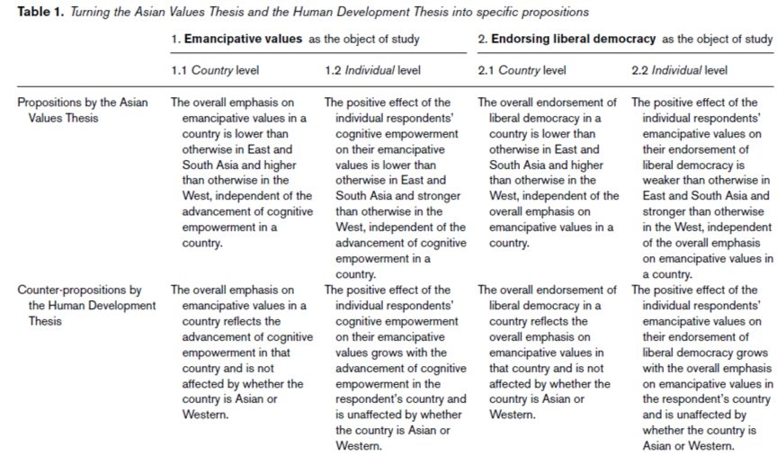
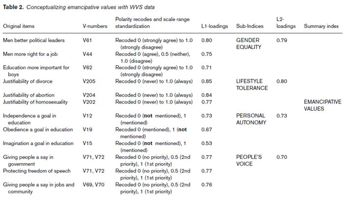
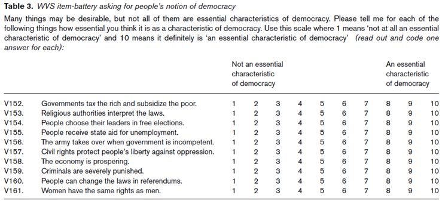
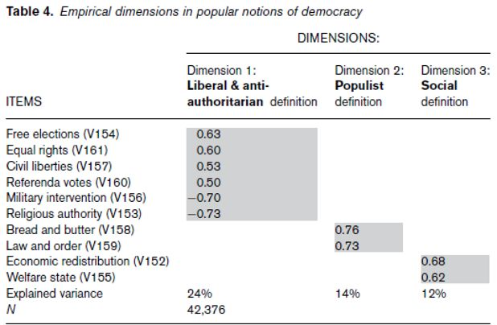
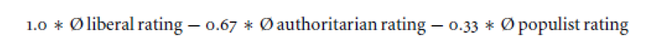
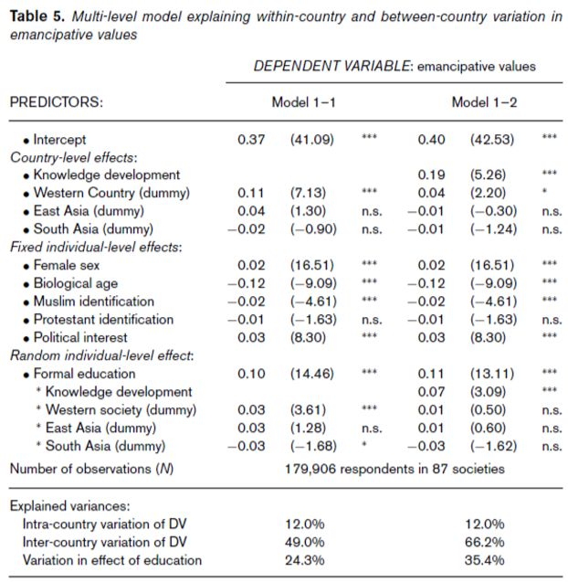
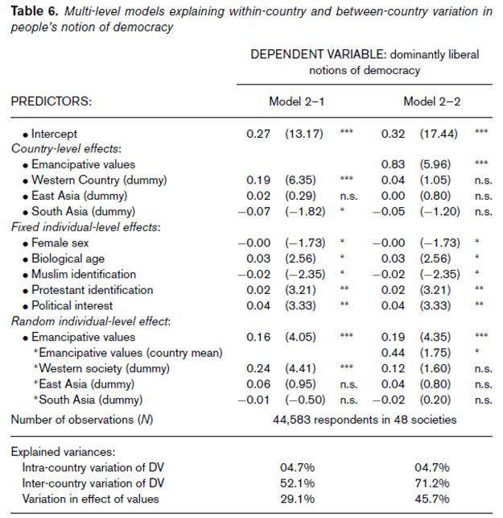

收录于合集
#比较政治学 121 个
#政治文化 8 个
文献来源： Christian Welzel,“The Asian Values Thesis Revisited: Evidence from the World Values Surveys,” Japanese Journal of Political Science ,Vol. 12, No. 1(April 2011), pp.1-31.
作者简介： Christian Welzel，德国吕讷堡大学民主研究中心教授，世界价值观调查协会（World Values Survey Association）副主席，其研究方向为发展理论、政治社会学和文化社会学。
引言
亚洲价值观理论认为亚洲的集体主义传统使得亚洲有异于西方对解放价值（emancipative values）和自由民主（liberal democracy）的重视，更重要的是，这一理论同样认为亚洲的发展并不是经济现代化的结果，亚洲能够以一种非西方的现代化模式来实现经济现代化。
既有的研究或者批评亚洲价值观的政治工具性，认为这是一种意识形态话语，或者从文本出发解释亚洲传统文化和解放价值的兼容性。但是目前对亚洲价值观理论的实证研究并没有通过对亚洲与西方的比较来对这一理论进行系统性检验。作者借助世界价值观调查的数据，检验亚洲是否在解放价值和自由民主上存在例外主义以及亚洲是否拥有独特的现代化模式。
作者首先回顾了学界对亚洲价值观的理论和实证研究（A. Sen 1997; F. Fukuyama 1995; Nathan 2007; Chang& Chu 2002; Park& Shin 2007）。作者认为，仅有Dalton&Ong(2006)对亚洲和西方进行了比较研究，虽然结果并不能彻底检验亚洲价值观的理论，但是这一研究有价值的地方在于，它揭示了亚洲价值观存在两个没有得到检验的核心主张：其一，亚洲国家的民众抵制西方强调的解放价值观，这种抵制与人们所处的现代化环境无关；其二，亚洲各国民众在缺少西方解放价值的同时，也抵制西方强调的自由民主，而且这种抵制不会发生变化。
假说与数据
作者认为，亚洲价值观理论的核心观点和人类发展理论是相悖的（Welzel et al. 2003; Welzel& Inglehart 2006），后者的核心概念是解放价值和自由民主。人类发展理论对亚洲的解释有两个基本的主张，这两个主张和亚洲价值观的主张是相反的：其一，亚洲国家的人民并不总是抵制西方强调的解放价值，与西方一样，随着人们认知能力的增强，亚洲对解放价值的强调也有所不同；其二，亚洲国家的民众并非完全没有解放价值，也不是一成不变地抵制西方推崇的自由民主。与西方一样，亚洲对自由民主的认可也因人们的解放价值观而有所不同。对此，作者从国家和个人层面提出8个可检验的命题。
作者使用了来自世界价值观调查中90多个国家和地区的数据，并将这些国家和地区分为十个文化区域（Huntington 1996; Welzel et al. 2003），并对解放价值和自由民主两个概念进行操作化。



上述量表通过探索性因子分析测量出关于民主定义的三个维度，分别是民主的自由和反威权式定义、平民主义式定义和社会式的定义。

这种测量衡量了自由主义者对民主的定义，最终作者采用如下公式对自由民主的得分进行计算：

结果
首先，作者发现，在不同国家民众对解放价值重视程度的分布中，亚洲并没有表现出特殊性，且亚洲国家内部也没有表现出同质性，作者认为这部分地证明了亚洲价值观并没有影响到亚洲地区对解放价值的重视。
其次，作者提出，对赋权认知（cognitive empowerment）水平的增加能够提高人们对解放价值的重视。作者通过观察十个文化区域民众的赋权认知水平（使用正式教育水平测量）和解放价值得分之间的关系发现，当人们的赋权认知水平越高，其解放价值的得分就越高。这表明亚洲与非西方地区的人们对解放价值重视程度较低可能是因为他们的赋权认知水平较低（受教育水平较低），而不是受到文化因素的影响，亚洲的文化并没有使亚洲人抵制解放价值。进一步研究各国的知识发展和解放价值得分的关系，作者发现亚洲国家基本分布在回归线附近，表明对于解放价值的解释，亚洲并不存在特异性。
作者进一步通过回归分析检验影响解放价值得分的因素。作者将东亚、南亚、西方国家作为虚拟变量（dummy variables）放入多层模型中，发现在控制了社会人口学变量之后，亚洲并没有对解放价值的得分有显著影响。模型的结果验证了命题1.1和命题1.2。

接着，作者对自由民主观念进行检验。作者认为，随着人们对解放价值的重视程度增加，人们就更加认可自由民主观念，这一点也通过数据得到了验证。作者使用多层模型进行回归分析，同样发现东亚的虚拟变量对自由民主观念没有任何影响，而将解放价值加入模型之后，地区的虚拟变量对自由民主观念的影响都不显著。这证明了命题2.1和命题2.2。

结论
作者认为，对于解放价值和自由民主的得分，亚洲地区和非亚洲地区仅仅存在程度上的差异而非种类上的差异，并且东亚和南亚之间的差异甚至超过了亚洲和西方的差异。两种观念在东方和西方形成的推动力是相同的，都是通过赋予权力的结果不断发展而形成观念，而多元主义现代化（multiple modernities）和文化例外主义（cultural exceptionalisms）的主张是值得怀疑的。人类发展的逻辑是一种促进对民众权力赋予程度的解放过程，而自由民主将是这一进程不可避免的结果。
译文：刘天祥 审校：陆屹洲 编辑：郭静远
【政文观止Poliview】系头条号签约作者